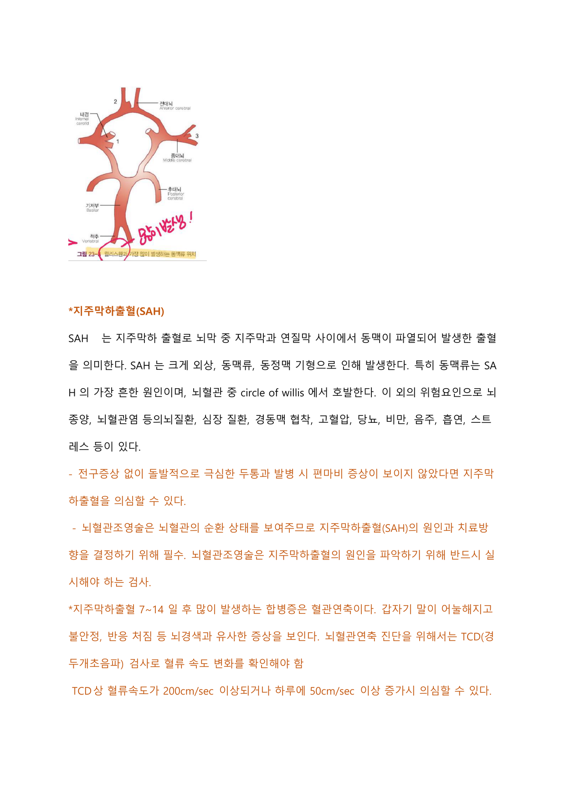
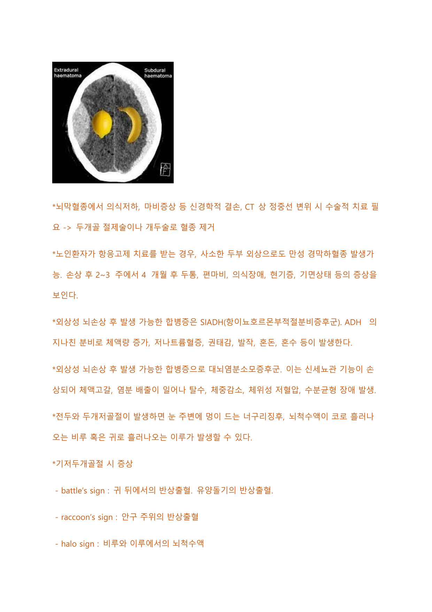

신경계
뇌졸중(뇌경색·뇌출혈), 외상성 뇌질환, 뇌수막염, 신경근·탈수초 질환(MS·MG·파킨슨·길랑-바레·ALS·알츠하이머), 두개내압 상승 관리, 척수손상, 발작, 뇌종양 및 신경계 검사를 다룬다.
1 뇌졸중 ① 뇌경색(허혈성) Ischemic stroke
뇌조직에 혈액을 공급하는 혈관이 막혀 수분 내 기능을 잃고 수일 후 괴사가 일어나 조직이 소실되는 상태. 혈중에서 나온 색전이나 혈전이 갑작스럽게 뇌혈관을 폐색시킨다.
과반수는 경동맥 등 큰 혈관이나 심장에서 떨어진 색전이 뇌혈관에 머무르며 경색되며, 경동맥과 이어진 중대뇌동맥에서 호발한다. 대부분의 혈전은 죽상동맥경화증에 의해 손상된 혈관 내피세포에서 형성된다. 뇌동맥이 완전히 막혀도 측부순환계를 통한 뇌혈류가 존재해 다양한 정도의 허혈 상태가 초래되며, 허혈 부위 뇌세포의 생존을 극대화하려면 재관류가 가능한 빨리 이루어져야 한다.
- 교정 가능: 고혈압, 당뇨, 고지혈증, Afib 등 심질환, 경동맥 협착, 흡연(좁아진 동맥에 혈전 형성, 죽상경화증 촉진)
- 조절 불가능: 55세 이상 고령, 뇌졸중 가족력, 남성
| 혈관 | 주요 증상 |
|---|---|
| 전대뇌동맥 | 병변 반대측 다리(팔다리 이하)의 위약감·감각저하, 반대측 다리 움직임·감각 조절 장애 |
| 중대뇌동맥 | 뇌혈량의 2/3 공급. 병변 반대측 안면·체간·팔다리 위약·감각저하(다리보다 팔·얼굴 위주), 실어증, 무시증후군. 우성반구 침범 시 실어증 동반 |
| 후대뇌동맥 | 병변 반대측 시야이상 |
| 기저동맥 | 운동실조, 사지위약·감각저하, 구음장애, 동공비대칭, 환각, 초조, 기억상실 |
| 소뇌동맥 | 보행장애, 운동실조 |
일반 증상: 한쪽 팔다리 마비·감각이상, 발음 불분명·언어장애, 보행 시 한쪽으로 넘어짐, 시야장애·복시, 의식장애, 심한 두통, 어지럼증, 근육약화·편마비·두통·구토 등.
운동성 실어증: 말은 이해하나 말을 하지 못함. 운동영역 인접부위인 브로카영역 손상에 의함, 편마비를 동반하는 경우가 많다.
- 병력(clinical history): 첫 이상증상 발견 시각·최종 정상 시간 확인이 중요, 와파린 등 항응고제 복용력 확인 → tPA vs 동맥내 치료(IA) 결정에 도움
- 혼동 증상 감별: 저혈당, 발작, 대사성뇌병증(저나트륨혈증·BUN 상승), 저혈압, 진정상태
- FAST(Face drooping, Arm weakness, Speech difficulty, Time to call), Cincinnati 병원전 뇌졸중 척도(얼굴처짐·팔처짐·언어)
- GCS, NIHSS, neurologic exam
- 혈당·전해질·신기능·cardiac enzyme·혈색소·혈액응고검사·감염 검사, SpO₂, chest X-ray, ECG
- 영상: CT(뇌경색·뇌출혈 구분, 진단 빠름), CT angiography(급성 대동맥 색전 확인), MRI(경색 부위·협착·폐색), diffusion MRI, Echo·carotid sonography(심인성 확인), cerebral angiogram, TCD(주요 뇌혈관 협착·폐색·측부순환 측정), leg sonography(DVT로 인한 embolism 확인)
- 선택: 간기능·독극물·혈중알코올·임신반응 검사, 저산소증 의심 시 ABGA, CT 정상이나 SAH 의심 시 요추천자, seizure 의심 시 EEG
적응증: 허혈성 뇌졸중에서 증상 발생(최종 정상 시간 기준) 3시간 이내(최대 4.5시간 이내) IV tPA 투여. 영상에서 뇌출혈이 배제되어야 하며, 조기 투여일수록 예후가 좋아 금기가 아니면 신속히 투여. 혈압은 185/110 mmHg 이내, 경구 항응고제 복용 시 INR 1.7 이하, 혈소판 10만 이상이어야 한다.
투여 방법: kg당 0.6~0.9 mg(최대 90 mg). 10%는 bolus로 1~2분간, 90%는 60분간 점적주사.
투여 후 관리: 투여 전후 혈압 관찰·IICP 사정. 심한 두통·갑작스런 혈압 상승·오심·구토 발생 시 투여 중단하고 응급 CT 시행. tPA는 간에서 대사되므로 간기능 평가 우선. 신경학적 검진은 15분마다 → 6시간 동안 30분마다 → 이후 16시간 매시간. BP는 첫 2시간 15분 간격 → 16시간 1시간 간격 측정. 혈압약은 180/105 이상 시 투여. L-tube·foley·A-line은 출혈위험으로 급하게 시행하지 않으며, tPA 24시간 후 CT 확인 후 항응고제·항혈소판제 치료 시작.
동맥내 혈전용해술: 중증 허혈성 뇌졸중에서 6시간 이내 시행 권고. IV tPA와 병행하거나, IV tPA 금기인 경우에도 6시간 이내 시행 권고.
항혈소판제(이차 예방): aspirin, clopidogrel 등. Aspirin은 뇌졸중 발생 후 48시간 이내 사용, tPA 시행 후에는 24시간 지나 투여 가능. 수술·치과치료·내시경 전 복용 사실을 알리도록 교육.
- Aspirin: 혈전·색전 억제, 재경색 예방. 반감기 15~20분(가장 짧음), 수술 7~10일 전 중단
- Clopidogrel: 뇌경색 재발 억제. 반감기 약 12시간, 수술 7~10일 전 중단
- Cilostazol: 혈류장애 개선. 반감기 약 12시간, 수술 2~3일 전 중단. 혈소판 감소증 가능
항응고제: Afib·cardiac embolism이 있으면 반드시 사용. 와파린은 비타민 K 의존성 응고인자 합성을 억제하며 INR 2~3 유지. 비타민 K가 많은 녹색채소·상추·양배추는 소량 섭취, 청국장·인삼은 와파린 효능을 떨어뜨리고 양파·마늘은 출혈 위험을 높임. 매일 일정 시간 정확한 용량 복용, 정해진 날 혈액응고검사 시행.
NOAC(eliquis·xarelto·pradaxa): 출혈 경향 낮고 약물·음식 상호작용 적으며 반감기 짧아 시술 7일/2일 전만 중단하면 됨. 반감기가 짧으므로 복용 누락하지 않도록 교육.
그 외 neuroprotective agent(경련 예방), carotid endarterectomy(심질환·컨디션 불량 시 불가), angioplasty·stent 삽입술.
| 항응고제 | 항혈소판제 | |
|---|---|---|
| 기전 | 혈액응고인자에 작용해 혈전 생성 차단 | 혈소판 응집을 방해해 혈전 생성 억제 |
| 대표 약물 | warfarin, NOAC | aspirin, clopidogrel |
| 적응 | 심방세동, 심부정맥혈전증 | 급성심근경색, 협심증 |
- 신경학적 사정: 발생 72시간 이내 변화가 많아 최소 하루 3번 이상 NIHSS 사정
- 혈압: 급성기 대부분 상승. 220/120 mmHg 미만에서는 혈압약을 투여하지 않음(160~180/90~100이 이상적). 단 대동맥박리·심한 심부전·고혈압성 뇌증은 신속 조절 필요
- 체온: 37.5℃ 초과 시 해열제 투여(체온 상승은 뇌 대사 증가), 저체온요법 고려 가능
- cardiac monitoring(ECG)으로 부정맥 확인
- 산소: SpO₂ 92% 이하 시 산소 공급
- 혈당: 60~150 사이 유지(고혈당은 경색 악화, 저혈당은 의식장애 유발)
- 수액·출혈 사정: tPA 후 혈뇨·잠혈 검사, 외상 예방. L-tube·ABGA 등 침습적 시술은 tPA 24시간 이내 회피
- 연하장애 환자: 앉은 자세에서 고개를 약간 숙인 상태로 섭취, 음식 점도를 높여 제공
- brain edema → decompressive craniectomy 시행
- seizure → 예방적 항경련제 사용
- END(early neurologic deterioration): 경색 크기 증가로 입원 3일 이내 발생, 의식변화·운동저하·언어장애 → stroke scale 지속 사정
2 뇌졸중 ② 뇌출혈(출혈성)·지주막하출혈 Hemorrhagic stroke / SAH
뇌실질내 출혈 또는 지주막하 출혈로, 혈액 축적이 인접 조직을 변형시키고 두개내압을 급속히 상승시켜 몇 시간 내 사망할 수 있다.
허혈성 vs 출혈성: 출혈성은 혈종으로 인한 공간 압박으로 두통이 심하고 의식장애 동반. 허혈성은 반신마비 등 신경학적 장애가 심해도 두통이 없고 의식이 명료한 경우가 많다.
- 교정 가능: 고혈압, 항응고제·항혈소판제 사용, 흡연·음주
- 교정 불가능: 혈관 기형(malformation), 외상, 동맥류, 가족력, 급성 허혈성 뇌졸중
- 뇌실질내 출혈: 고혈압이 가장 큰 원인, 기저핵 부위 호발
- 지주막하 출혈(SAH): 동맥류가 80~90%, circle of Willis에서 호발(전교통동맥·내경동맥·중대뇌동맥). 재출혈 빈도·혈관연축 문제 발생
전구증상 없이 돌발적인 극심한 두통, 발병 시 편마비가 보이지 않으면 SAH 의심. 동맥류 파열 시 망치로 머리를 내리치는 듯한 극심한 두통과 목 경직(뇌수막 자극 증상). 뇌수막염의 목 경직과 달리 두통이 극심하다.
뇌혈관조영술은 SAH의 원인·치료방향 결정에 필수로 반드시 실시. CT 정상이나 SAH 의심 시 요추천자에서 뇌척수액 내 혈액 발견.

혈압 조절이 가장 중요: 수축기 150~220 mmHg인 경우 1시간 이내 140 mmHg 이하로 낮추는 것이 안전. GCS와 혈종 위치에 따라 두개술·혈종제거술 시행.
- DVT 예방: 압박스타킹, IPC, LMWH, 조기 침상재활
- 흡인 예방: dysphagia 조기 인지, 흡인성 폐렴 위험 커 경구 섭취 줄이고 L-tube 경관영양, 연하장애 선별 후 천천히 식이
- 영양: 초기 고혈당 주의로 금식, 3~4일 후 천천히 공급
- 감염: 폐렴·UTI 흔함. 유치도뇨는 안정되면 조기 제거
- 배변: 변비가 가장 흔함(혈압 상승 요인) → 변완화제. 요실금 시 배뇨약물·방광훈련
- 낙상·욕창 예방: 체위변경, 욕창예방 매트리스
두부수술 환자 간호: 등장성 수액 사용(저장성 수액은 BBB 방해), 뇌동맥류 결찰술 후 혈관연축 예방 위해 어느 정도 고혈압 유지, AAP로 통증 조절, 항응고제는 개두술 초기 3~5일 내 시작(24~48시간 이내는 시작 안 함), head elevation으로 정맥순환 증진·IICP 하강. 저체온요법 중단 시 시간당 1℃ 속도로 가온.
| 지연 수술 | 조기 수술 | |
|---|---|---|
| 장점 | 뇌부종 감소로 혈관연축 발생 가능성 감소 | — |
| 단점 | 재출혈 위험 높음 | 뇌 긴장으로 뇌견인 어렵고 동맥류 박리 시 조기파열 많음 |
- 혈관연축(7~14일 후): 말이 어눌해지고 불안정·반응 처짐 등 뇌경색 유사 증상. TCD로 혈류속도 변화 확인(200 cm/sec 이상 또는 하루 50 cm/sec 이상 증가 시 의심, 200 이상은 중증연축). 예방약물 CCB·NE, triple H 요법(hypervolemia·hypertension·hemodilution): CVP 10~12 mmHg, SBP 160~200(기본 혈압보다 15~20% 높게), Hct 30~35%
- 수두증(3주 이후 만성): 3대 증상은 치매·보행장애·실금
- 재출혈(첫 24시간 이내 최다): 오심·구토·심한 두통·의식저하·새 신경학적 결손
3 두개내압 상승(IICP)·EVD 관리 Increased ICP
정상 ICP는 5~15 mmHg. 뇌척수액·혈액 증가로 뇌압이 계속 15~20 mmHg 이상 되는 것을 IICP라 한다.
- 초기 징후: 두통, 진행 시 쿠싱 3대 징후(혈압·맥압 증가, 서맥, 불규칙한 호흡)+고열·유두부종
- 급성기: 의식장애, 두통, 발작, 동공변화(확대·고정·느린 반응), 시야장애, 운동·감각 장애, 오심 없는 투사성 구토
- 지속 시: 의식 약화, 맥압 상승, 서맥, 고체온, 시신경 유두부종
- 만성: 복시, 아침에 심한 두통
- 보상기전: 뇌척수액·혈액 완충으로 뇌혈액량 감소 → 한계 초과 시 뇌혈관확장·SBP 상승·서맥·맥압 증가
만니톨(삼투성 이뇨제): 15분에 걸쳐 빠르게 정주, 혈청 삼투질 농도 310~315 유지. 신장 배설되므로 신질환 시 사용 금지. 부작용 고칼륨혈증·탈수·심부전, 정맥 주입 시 필터 수액세트 사용(결정 생기기 쉬움), 혈당 상승 가능.
- 고혈당은 IICP 악화 → 수액은 생리식염수로 공급
- 침상 머리 15~20도 상승, 열 나지 않게(체온 상승은 혈관 이완 → IICP 증가)
- PaCO₂ 관찰(높으면 뇌혈관 확장 → 뇌혈류량·IICP 증가), PEEP는 10 cmH₂O 이하
- 욕창 등 이차 합병증 예방, 측위·체위변경, 흥분·통증 최소화
- 항경련제는 초기 간질 예방 위해 사용(지속 투여는 권고 안 함)
- 두통 시 비마약성 진통제(Morphine은 연수 기능 저하로 사용 안 함)
- 수분 섭취 제한, 혈청삼투압 320 mOsm/L 이상이면 신부전 위험
- IICP 의심 시 바로 CT 촬영
EVD(체외뇌실배액) 관리: 목적은 뇌척수액 채취·배출, 뇌압 감소, ICP 연속 측정. 위치는 tragus(귀바퀴 앞 돌출부) 기준으로 두개내압에 따라 높이 조절. 배액 양·양상·색깔·oscillation 확인, patency 확인. 삽입부 daily dressing, 배액백이 바닥에 닿지 않게, 3-way는 멸균 거즈로 감쌈. 머리 밴드 압박부 욕창 예방.
ICP 측정: tragus에서 EVD line을 수평으로 맞춘 지점을 영점(zero level)으로 하고, line을 수직으로 세워 CSF가 멈춘 지점의 높이가 ICP. 배액 안 될 때는 먼저 oscillation으로 개방성 확인. 흡인 시 EVD clamping(갑작스런 배액 위험), 감염위험으로 irrigation 안 함, 검체 채취 시 천천히 제거, 예방적 항생제 사용.
정확한 ICP 측정 도관 삽입부위는 뇌실내공간(CSF 검사 가능, 배액으로 IICP 조절 가능).
4 일과성 허혈발작 TIA, transient ischemic attack
수분~수시간 이내 회복되며 뇌조직 손상이 없을 수 있다. 그러나 TIA 환자 50%에서 뇌경색이 재발할 수 있어 치료가 필요하다.
- 고령, 가족력, 과거 뇌졸중 병력, 고혈압, 고지혈증, Afib, 당뇨, 비만, 흡연
CXR, ECG, carotid doppler, angiography, CT, MRI. ABCD2 scoring(age·BP·clinical feature·duration·diabetes)으로 0~7점 계산, 4점 이상이면 고위험. 60세 이상 1점, SBP≥140 또는 DBP≥90 1점, 편측 위약 2점(언어이상만 1점), 증상 지속 60분 이상 2점(10~60분 1점), 당뇨 1점. 위험도가 높을수록 7일 내 뇌졸중 위험 증가.
- 협착 경도~중등도: 정기 f/u하며 항혈소판제·항응고제 사용, 중증은 carotid endarterectomy
- 일차치료약물은 항혈소판제 aspirin: 처음 200~400 mg 후 75~100 mg daily. TIA+Afib이면 반드시 anticoagulation(INR 2~3)
- 이차예방: 생활습관 교정, 조절 가능 위험요인 관리
5 GCS Glasgow Coma Scale
의식 수준 사정 방법으로 눈뜨기·언어·운동 기능을 평가. 합계 3~15점. 3점 coma, 4~7점 semi-coma, 8~12점 stupor, 13~14점 drowsy, 15점 alert.
| 눈뜨기(E, 4점) | 언어(V, 5점) | 운동(M, 6점) |
|---|---|---|
| 자발적 4 | 지남력 양호 5 | 명령에 따라 움직임 6 |
| 음성에 반응 3 | 지남력 없으나 문장 4 | 통증부위 인식·손 치움 5 |
| 통증 자극에 반응 2 | 부적절한 단어 3 | 회피반응(손 치우려 안 함) 4 |
| 무반응 1 | 이해 불가 소리 2 | 이상굴곡반응 3 |
| 무발성 1 | 이상신전반응 2 / 무반응 1 |
6 NIHSS National Institutes of Health Stroke Scale
뇌졸중 환자의 신경학적 장애를 평가하는 임상 척도. 의식수준·응시·시야·안면마비·상하지 위약·운동실조·감각·언어능력·구음장애·인식상실 등 항목으로 구성. 0~42점, 점수가 높을수록 장애가 심하다.
회복 가능성을 잘 반영하므로 치료 중에도 지속 측정해 추이 확인. 발생 72시간 이내가 신경학적 변화 최다 시기이므로 최소 하루 3회 이상 사정. 그림 상황을 설명하게 하는 것은 실어증(최상의 언어능력) 평가.
7 외상성 뇌질환 Traumatic brain injury
- 뇌진탕(concussion): 외상 후 의식소실·반사소실
- 뇌좌상(contusion): 외상 후 타박상·혈관 출혈
- 광범위 축삭손상(diffuse axonal injury): 두부외상의 광범위한 형태, CT상 뚜렷한 병소 없으나 임상적으로 혼수 6시간 이상 지속
| 경막외혈종(EDH) | 경막하혈종(SDH) | |
|---|---|---|
| 위치 | 두개골과 경막 사이 | 경막과 지주막 사이 |
| 특징 | 잠깐의 의식소실 후 의식명료기간(lucid interval) 수분~수시간 동반 | 대부분 두부 외상에 의해 발생. 노인·항응고제 치료 시 사소한 외상으로도 만성 SDH 가능(2~3주~4개월 후 두통·편마비·의식장애) |
| CT 모양 | 볼록렌즈 모양 | 초승달 모양 |
신경학적 결손·정중선 변위 시 수술(두개골 절제술·개두술로 혈종 제거).

- SIADH: ADH 과분비 → 체액량 증가·저나트륨혈증·권태감·발작·혼돈·혼수
- 대뇌염분소모증후군: 신세뇨관 기능 손상 → 체액고갈·염분 배출·탈수·체중감소·체위성 저혈압
- 전두와 골절 시 너구리징후(눈 주변 멍), 뇌척수액 비루(코)·이루(귀)
- battle's sign: 귀 뒤·유양돌기 반상출혈 / raccoon's sign: 안구 주위 반상출혈 / halo sign: 비루·이루의 CSF
- CSF 누출 확인 — 포도당 검사: 분비물 포도당이 말초혈당의 50~80%면 CSF로 의심
- 침상머리 30도 이하 유지(코로 풀거나 재채기·코에 손 넣지 않음)
- 코에 무균 패드, 축축해지면 교환(거즈로 단단히 막으면 안 됨)
- 기저골골절 누출은 90%가 5~7일 후 자연 호전, 5~7일 후에도 지속 시 요추천자로 배액
- 예방적 항생제는 추천하지 않음(단 감염 예방 위해 광범위 항생제 사용 언급)
8 뇌수막염 Meningitis
뇌막은 경막 → 거미막(지주막) → 연막 순으로 뇌·척수를 덮는다. 뇌수막염은 거미막과 연질막 사이 거미막하강(지주막하강)의 감염이다.
- 세균성: 자체 발생 또는 인후염·폐렴 등 감염 시 혈액 통해 침투. 치사율 높고 후유증 빈도 높으며 급성 진행. 성인은 연쇄구균(폐렴구균)·수막구균이 흔함
- 바이러스성: 가장 흔한 원인(콕사키·에코바이러스)
- 급성 무균성: 마이코플라즈마·리케차 등
- 급성 뇌막염: CSF 검사로 원인균 진단 후 즉각 항생제(지연 시 BBB 파괴·IICP로 사망) / 만성 뇌막염: 주로 진균, 수주~수개월 진행
38도 이상 고열, 두통, 목 강직, 신경자극에 의한 근연축. 특이 증상은 Kernig sign(누운 자세에서 고관절 굴곡 후 무릎을 펴려 할 때 저항·통증)과 Brudzinski sign(머리를 굽히면 고관절·무릎이 자동 굴곡).
감별진단을 위해 CSF 검사가 중요. 유두부종은 IICP 징후이므로 CSF 검사 전 반드시 뇌 CT 필요.
| 정상 | 세균성 | |
|---|---|---|
| 압력 | 80~200 mmH₂O | 상승 |
| 백혈구 | 0~5 cells/mm³ | 100~5000개로 증가 |
| 포도당 | 50~75 mg/dL | 40 미만 감소 |
| 단백질 | 15~40 mg/dL | 100 이상 상승 |
| 균검사 | 음성 | 양성 |
결핵성: CSF 상 AFB 양성. 바이러스성: CSF가 정상에 가까우면 의심 → PCR로 바이러스 DNA/RNA 검출. 수막구균성(Neisseria meningitidis): 그람음성, 특징적으로 붉은 점상출혈 동반, CSF 압력↑·단백질↑·포도당↓.
| 세균성 | 바이러스성 | |
|---|---|---|
| 경과 | 1~2일 내 급격 진행, 조기치료 안 되면 사망·후유증 | 3~4일 진행, 7~10일 후 회복 |
| 치료 | 즉시 항생제 10~14일 | 대증치료, 뇌실 침범 시 항바이러스제 |
| CSF | 포도당↓·단백질↑·백혈구↑ | 정상에 가까움 |
- 수막구균 백신: 4가, 2개월 영유아~만 55세 성인 접종 가능
- 뇌염: 발열·섬망·의식저하 등 뇌실질 침범 시 의심, 바이러스성이 흔함. MRI상 전두엽 하부·측두엽 병변
- 뇌농양: 두개내외 감염의 이차 발생, 화농성 뇌염·농양 형성. CT/MRI상 고리 모양 조영 증강+뇌부종
9 다발성경화증 MS, Multiple Sclerosis
뇌·척수·시신경(CNS)의 탈수초성 질환으로, 신경세포 축삭을 둘러싼 절연물질인 수초가 탈락하는 자가면역질환. 주로 젊은 연령층에 발생하는 만성 염증성 질환으로 재발과 완화를 반복한다. 말초 림프절에서 감작된 면역세포가 BBB를 통과 → 미세아교세포에 의해 활성화 → 수초 공격·탈수초·축삭 손상.
- 유전적 소인이 있는 환자에서 환경에 의한 자가면역반응
가장 흔한 증상은 시야 손실·복시 등 시각장애, 사지·몸통·얼굴 한쪽의 감각이상, 다리·손 위약감. 감각 증상이 초기에 한쪽 시신경에서 발생. 운동장애로 반신·사지마비, 척수 침범 시 배뇨·배변·성기능 장애, 대뇌 변화 시 우울·기억력·인지기능 장애. 허약·피로·떨림·통증·강직 등. 약화와 완화가 반복되며 MRI로 확진, 스테로이드로 치료.
- 양성형: 한두 번 발현 후 더 악화 안 됨, 10~15년간 경미한 장애
- 재발-완화형: 호전되다 재발 반복(MS 환자의 85%)
- 이차진행형: 호전·약화 반복 후 회복 정도 줄며 지속적 약화(재발-완화형과 함께 흔함)
- 일차진행형: 완화-재발 없이 점진적으로 진행
감별진단이 중요(SLE, Lyme disease). McDonald 진단법: 2가지 이상 임상증상+2개 이상 병변이 MRI에 보이면 MS 부합. MRI는 백질의 수초탈락 plaque 확인으로 확진에 중요. neurologic exam·medical history 중요, blood test로 SLE·Lyme 감별, VEP(시각유발전위), 요추천자로 CSF 분석.
급성치료는 코르티코스테로이드(500~1000 mg/d IV 5일 후 oral 전환). 증상 완화 위해 면역억제제, 시신경 통증에 근이완제·gabapentin. 질병조절치료제로 베타인터페론을 흔히 사용. 그 외 항우울제·항경련제·질환조절치료제.
10 중증근무력증 MG, Myasthenia Gravis
신경근육접합부에서 아세틸콜린 수용체 숫자가 줄어들며 근력 약화와 근육 피로감이 나타나는 자가면역질환. 비정상적 자가항체가 아세틸콜린 수용체에 결합해 아세틸콜린이 결합하지 못하게 함 → 신경근접합부 신호 차단 → 근수축 불가. 근육 활동 중에는 약화되고 휴식 후 호전된다.
급성기 90% 이상에서 첫 증상은 눈꺼풀 처짐(안검하수)과 복시. 근위부 위약감 특징적. 증상은 눈에서 시작해 점차 아래로 내려가 말이 어눌해지고 삼킴곤란·발성장애 발생. 호흡근에 문제 시 호흡곤란 → myasthenic crisis(근무력 위기). 많이 쓸수록 심해지고 자고 일어나거나 쉬면 호전.
- 안구형: 안검하수·복시
- 전신형: 눈·얼굴·턱·목 근육과 팔다리·호흡근까지 영향
- EMG, RNST 등 신경전도검사(진폭 감소)
- anti-AchR Ab 검사(자가항체 유무)
- Tensilon(텐실론) 검사: 항콜린에스테라아제(edrophonium, neostigmine) 주사 후 근력이 뚜렷이 호전되면 양성. 근무력 위기 vs 콜린성 위기 감별에도 사용
- chest CT로 흉선종 확인(MG 환자 70~15%에서 흉선종 관련)
항콜린에스테라아제(pyridostigmine 30~60 mg)로 아세틸콜린 분비 증가, 유지치료로 corticosteroids. 자가면역질환이므로 IVIG·혈장교환술, 반응 없으면 rituximab. 흉선종 관련 시 흉선절제술.
| 탈분극성 | 비탈분극성 |
|---|---|
| suxamethonium | tubocurarine, pancuronium, vecuronium, atracurium |
tubocurarine은 비탈분극성으로 니코틴수용체에 아세틸콜린과 경쟁적으로 작용해 결합을 억제. 그 작용을 길항하는 약물은 neostigmine.
11 근위축성측삭경화증(루게릭병) ALS, Amyotrophic lateral sclerosis
피질·연수·척수 운동신경원의 퇴행성 변화로 상지에서 시작되는 진행성 근위축, 진행성 연수 마비 동반. 대뇌·척수 운동뉴런 파괴(운동뉴런질환)로 근육 약화/마비가 몸 전체로 진행. 상위·하위 운동뉴런 모두 손상.
- 불명. 바이러스·대사성·감염성·중금속 축적·면역성·유전 등
운동 관련 모든 증상 가능. 보통 팔·다리에서 처음 발생, 편측·국소적. 진단~약화 시점 기간이 길수록 예후 좋음. 특징적으로 혀·피부 아래 섬유속연축(자발성 근육경련) → 진단에 도움.
확진 검사는 없음(혈중 CK·근전도·MRI 도움). 치료: Riluzole(항글루타메이트, 뉴런 파괴·세포흥분 독성 감소), 영양공급·위루술·호흡보조기·심리상담·작업·언어치료 등 다학제 접근.
12 파킨슨병 Parkinson disease
미세 움직임을 조절하는 뇌 기저핵 세포가 퇴행하며 손떨림·운동장애가 생기는 진행성 뇌질환. 정상 세포는 도파민을 생성해 아세틸콜린과 작용하여 미세 운동을 조절. 기저핵과 흑질의 세포 소실로 발생, 중뇌 흑질 도파민 신경세포 소실·변성, 남은 신경세포 안에서 루이소체 관찰.
- 유전·환경 인자 상호작용. 대부분 가족력 없이 발병(10% 가족성). 도시보다 농촌(농약·오염된 물 노출)
- 안정시 떨림(resting tremor): pill rolling tremor(환약 굴리는 손가락 떨림)
- 운동완만(bradykinesia): 단추 잠그기·글쓰기 같은 세밀한 활동 어려움
- 근육강직(rigidity), 자세불안정(구부정), shuffle gait, 무표정(mask-like expression)
- 말기: 위장관 장애·삼킴곤란·변비·섭식곤란. 기립성 저혈압·이상운동증·수면장애는 이차 발생. 치매는 중기 이후
parkinson PET-CT로 도파민 분비부 활성화 확인(확진은 아님), MRI상 중뇌 흑색질이 까맣게 보이면 의심. 특징적 증상+영상으로 진단.
- levodopa: BBB 통과해 도파민 형성에 도움. 급성기 부작용 오심·구토, 장기 복용 시 치매 유사 증상
- dopamine agonist: levodopa보다 효과 미미하나 장기 사용 가능, levodopa와 병합
- 수술: lesional surgery(비가역적, 현재 잘 안 씀), DBS(deep brain stimulation, 전기자극)
- Hoehn-Yahr 척도로 진행정도·치료효과 평가(stage 0~5)
13 길랑-바레 증후군 GBS, Guillain-Barré syndrome / 급성 다발성 신경염
급성 형태의 면역 매개성 신경병증으로 급성 이완성 마비의 가장 흔한 원인. 빠르게 진행하는 사지의 대칭성 근력 쇠약과 건반사 감소·소실. 말초에서 시작해 몸통·호흡근(호흡곤란)·얼굴을 마비시키며 빠르게 진행되는 상행성 마비. 자가면역반응으로 말초신경 수초 파괴.
- 급성 인플루엔자 감염·설사 후 수일~수주 사이 신경염 증상 유발(호흡기/소화기 감염 선행). 환자의 2/3는 증상 시작 전 6주 이내 상기도감염·위장염
- 원인균: Epstein-Barr virus, Mycoplasma pneumoniae, Campylobacter jejuni, Cytomegalovirus
- 운동성: 감각 문제 없음, 그 외 상행성과 동일
- 상행성: 가장 흔함, 허약·감각이상·마비가 하지에서 위로 진행
- 하행성: 얼굴·턱 근육부터 약화 → 하지로 진행, 호흡기능에 바로 영향
마비는 대부분 회복. 일부 근쇠약·위축·만성신경병증 후유증.
14 알츠하이머병 Alzheimer's disease
아밀로이드베타 단백질·타우 단백질이 뇌에 쌓이며 신경세포가 손상되는 퇴행성 질환으로 치매를 일으킨다. 특징적 병변은 신경반(neuritic plaque)과 신경섬유다발(neurofibrillary tangle), 전반적 뇌 위축.
- 유전인자(1·14·19·21번 염색체 이상), 신경전달물질 경로 이상, 고령, 다운증후군, 저학력, 치매 가족력, 80세 이상 여성, 심혈관 위험인자(고혈압·당뇨·고지질혈증·비만)
초기: 기억력 저하·기억상실, 이름 기억 못 함, 운동·몸짓 불능(실행증), 인지불능증·실어증. 중기: 충동조절·판단력 저하. 말기: 사람 못 알아봄, 대소변 못 가림.
- MMSE(낮을수록 심함), CDR(높을수록 심함), SNSB(치매 종류 감별, 국내 개발)
- APOE4 유전자 검사
- MRI로 hippocampus·temporal lobe volume 측정(진행 시 대뇌피질·해마 위축)
- amyloid PET로 퇴화 병변 확인
- 1차: 콜린에스테라아제 inhibitor(donepezil) — 아세틸콜린 분비에 도움
- 진행된 중증: NMDA receptor antagonist(memantine, ebixa)
15 두통·삼차신경통 Headache / Trigeminal neuralgia
| 유형 | 특징 |
|---|---|
| 긴장성(Tension) | 성인이 가장 흔히 경험. 머리 양쪽, 앞·뒤가 꽉 조이는 통증 |
| 군집성(Cluster) | 가장 고통스러움. 청소년기~중년, 한쪽 눈 뒤 타는 듯·찌르는 통증 |
| 편두통(Migraine) | 두통 중 두 번째로 흔함. 욱신거리는 박동성 통증 한쪽, 최대 72시간 지속, 전조 동반, 오심·구토 |
| 부비동(Sinus) | frontal·maxillary sinus 압통 |
원발성: 편두통·군집두통·삼차신경통 / 이차성: 구조적·전신적·감염성 원인.
동맥·정맥 이상에 의해 삼차신경(CN5)이 압박되어 발생. 볼·턱·입술·잇몸에 전기자극 같은 찌르고 타는 통증. 삼차신경은 저작과 얼굴 감각 담당, 측두근·저작근을 교대로 촉진하며 이를 꽉 깨물게 해 근수축 강도 확인.
16 척수손상 Spinal cord injury
척수쇼크: 손상부위 이하 모든 운동·지각·반사 기능이 소실된 상태(부적절한 세포 관류로 인한 증상은 아님).
| 유형 | 특징 |
|---|---|
| 측방 | 손상부위 동측 운동·촉각·위치·진동 소실 / 반대측 통각·온도 소실 |
| 전방 | 손상부위 이하 운동·통증·온도 소실 / 촉각·자세·진동 보존 |
| 후방 | 손상부위 이하 운동 보존 / 촉각·위치·진동 소실 |
| 중심 | 운동기능 소실이 상지에 현저 |
- C7~8 손상: 삼두근건반사 항진, C7 손상 시 손가락 신전 안 됨, C8 손상 시 손가락 굴절 안 됨
- 턱으로 전동휠체어 조정 → C5 손상 의심
- 경추골절로 상부 척수손상 시 횡격막·늑간근 영향으로 호흡장애 가능. 골절·탈구 확인에 X-ray 우선
- 신경성 쇼크: 교감신경 긴장 저하로 순환혈량·혈압 하강. 교감신경 차단으로 혈관 수축 못해 저혈압, 미주신경 자극으로 서맥, 말초혈관확장으로 피부 따뜻·건조
- 자율신경 과다반사(autonomic dysreflexia): T6 이상 손상 시. 유해자극(가장 흔한 것은 팽창된 방광·장, 그 외 욕창·온도 노출·배뇨배변 훈련)으로 손상부위 위쪽 발한·홍조, 아래쪽 오한·혈관수축, 갑작스런 고혈압·두통·서맥·오심·경련
- 미주신경성 실신: 대부분 자연 회복. 예방 — 탄력스타킹, 적정 염분 섭취, 장시간 서있기 회피, 수분 섭취, 실신감 시 앉거나 눕고 다리 올림, 갑자기 일어나지 않기
이차손상 예방 위해 혈압 유지가 중요. 신경학적 예후 호전 위해 손상 8시간 이내 고용량 스테로이드요법 시작 후 tapering off. 고용량 스테로이드 시 위궤양 가능 → H2 blocker 투여, 경관영양 중이면 영양공급 전 위액 양상 모니터.
17 백내장·녹내장 Cataract / Glaucoma
| 백내장 | 녹내장 | |
|---|---|---|
| 기전 | 수정체 혼탁으로 시야가 흐려짐 | 방수가 배출되지 못해 안압 증가 → 시신경 혈액순환 장애·손상 |
- 백내장 수술 전 알파-1 아드레날린성 antagonist를 2~3일간 중단(홍채이완증후군 → 수술 후 축동 안 될 위험)
- 녹내장 위험요인: 고혈압·심혈관계 질환·당뇨·비만
- 녹내장 치료약 timolol 안약은 베타아드레날린수용체차단제
당뇨의 40%에서 발생. 망막 혈류 이상·혈관벽 약화로 망막출혈·황반부종·시력 손실, 흐릿한 시야·dark spots. 안저검사·OCT로 진단. 조기 혈당 조절로 예방, 치료는 스테로이드 주사·레이저수술·vitrectomy. 당뇨 진단 시 초기 안과 검진 필수, 1년 1회 f/u.
18 비염 Rhinitis
비강 점막에 염증이 생기는 것. 주요 원인은 특정 알러젠 노출 등 환경적 요인, 가족력·천식·아토피와 관련.
watery한 콧물, 코막힘, 재채기, 가려움. 12주 이상 지속 시 만성.
Allergy skin test, nasal cytology, otoscope. 중등도 이상 시 스테로이드 스프레이를 1차 약제로, 효과 없으면 decongestant·oral antihistamine, 호전 없으면 면역요법.
알레르기원 노출 → B림프구가 IgE 생성 → IgE가 비만세포 표면에 결합 → 재노출 시 비만세포가 히스타민 유리 → 기관지 수축·점막 부종·점액 분비 등 알레르기 반응.
19 수두증·VP shunt Hydrocephalus / VP shunt
성인기 수두증의 3대 증상은 치매·보행장애·실금. 뇌 중앙 '돈로공' 폐쇄는 폐쇄성 수두증을 초래. 정상압수두증은 단락술(shunt op)로 호전되며 VP shunt가 가장 흔한 수술. 급성 수두증에서 IICP 발생 시 만니톨이 아니라 VP shunt로 치료.
- 과잉 배액: CSF 과다배액 시 두통·어지러움·오심·기립성 저혈압
- 수막 감염: shunt 통해 세균 침범 시 수막 자극 증상(발열·심한 두통·발작·의식변화·목 경직)
- 두부·복부 수술부위 모니터, 장음 확인 후 식이 시작
- 의식이 좋아져야 shunt로 IICP가 조절된다는 증거
- 급격한 배액 방지 위해 침상머리를 바로 올리지 않음 — 빠른 배액 시 경막하혈종 가능하여 supine position 유지, head elevation은 단계적으로 천천히
- 벌브 부위에 직접 압력 가하지 않기
- 이뇨제는 탈수 유발로 권장하지 않음
20 발작·경련 Seizure / Status epilepticus
- 간질지속증을 막기 위해 적극적 약물 치료 필요. 발작 중 입안에 무언가 넣는 행위는 더 큰 손상 유발 가능
- phenytoin: 간질지속증에 투여. 한꺼번에 많은 용량 주입 시 부정맥 → 분당 50 mg 넘지 않게 주입, 반드시 EKG 모니터링. 빠른 투여 시 심근억제·부정맥·심정지. 치료적 혈중 농도 10~20 mg/mL. 저혈압 가능, 항고혈압제 작용 강화로 감량. 포도당에 희석 시 침전 → 반드시 NS에 단독 투여. 소발작에는 효과 없음
- 5분 이상 발작 지속 시 lorazepam 또는 valium IV
- 알코올성 뇌병증 의심 시 thiamine IV
전조증상(메스꺼움, aura) 후 의식소실, 응시(staring), 의미 없는 행동을 반복하는 automatism(자동능)·목적 없는 움직임.
21 뇌종양 Brain tumor
- 가장 치명적인 뇌종양은 교모세포종(5년 생존율 5% 미만)
- 뇌하수체종양 경접형동 접근법(TSA) 수술 후 가장 흔한 합병증은 요붕증: ADH 부족으로 다뇨·탈수·고나트륨혈증·요삼투질농도 저하·혈중 삼투질농도 증가. 의식수준 변화 관찰
뇌종양 절제술 후 저나트륨혈증·혈청삼투압 저하는 SIADH. ADH 과분비로 저나트륨혈증·삼투질농도 저하. 고장성 생리식염수(3% NaCl)로 서서히 교정(시간당 1 mEq 미만, 교정속도 1.3 mEq/L/hr 이하), 하루 800 cc 이하 수분 제한, 3% NaCl 20~50 cc/hr 투여, 필요시 이뇨제.
- 뇌관류압 60~70 유지, 저장성 수액 금기, 만니톨로 뇌수분 감소, 산소 충분히 공급
22 기타(모야모야병·뇌사·진정·통증) Etc.
내경동맥·전대뇌동맥·중대뇌동맥이 점진적으로 좁아지다 막히는 소견. 뜨거운 음식 식히기·심하게 울기 등 과호흡 유발 상황에서 교감신경 자극으로 혈관 수축 → 의식 소실·반신마비·언어장애 등 TIA 발생. 뇌경색 진행 방지 위해 두개내외혈관문합술 시행.
- 뇌사 추정자·조직기능 희망자 발생 시 KODA(한국장기조직기증원)에 연락
- 뇌사판정 뇌파검사 기준: 30분 이상 평탄뇌파 지속
- 생애말기 환자·보호자 간호 시 '사망'·'죽음' 단어를 의도적으로 회피하는 것은 의사결정에 방해되어 적절하지 않음
- 반감기 짧고 활성 대사산물 없으며 아편양-보조 효과가 있어 중환자 진정 관련 섬망 위험이 적은 진정제: precedex(dexmedetomidine)
- 통증계획은 사전 수립, fentanyl은 빠른 진통이 필요할 때 유용, prn보다 지속·정기 주입이 효과적, ketorolac은 5일 이상 사용 안 함(신부전·출혈 모니터)
23 신경계 검사 Neurologic examination
- 시행 위치는 L3~L4 사이(척수가 L1~L2에서 끝나므로 손상 예방)
- 검사 전 방광·장 비우기, 검사 후 두통 감소 위해 첫 2~3시간은 편평한 곳에서 앙와위·복위
- 금기: IICP 환자·뇌종양 의심 환자(CSF 급격 제거로 뇌구조가 대후두공으로 탈출 → 갑작스런 사망 가능)
- pin point pupil: 1 mm 미만 극소동공, 뇌교출혈이나 아편·헤로인 등 마약류 효과 암시
- 양쪽 동공이 빛반사는 있으나 확장된 경우: 마약·교감신경계 자극 약물
- 유두부종(papilledema): 시신경 유두 부종, 뇌병변 의미(뇌막염·SAH·외상·종양)
- 조정기능(소뇌) 검사: 손가락-코검사, 발뒤꿈치-무릎검사, 빠른교대운동검사
- 성인 바빈스키반사 양성 = 상위운동신경원 병소
- 뇌간신경반사(눈머리반사, doll's eye): 의식 없는 환자의 안구운동 검사, 머리를 좌우로 회전 시 머리 반대방향으로 눈이 움직이면 정상. 경추손상 환자는 시행 불가
| 신경 | 기능·검사 |
|---|---|
| CN1 olfactory | 후각 |
| CN2 optic | visual acuity, peripheral vision |
| CN3·4·6 | 외안근 운동. Oculomotor(3)·Trochlear(4)·Abducens(6). 6방향 응시검사로 약한 외안근 확인 — 정상은 양안이 목표물과 나란히 움직임. 좌·우 직선 방향으로 안 움직이면 제6뇌신경 마비 |
| CN5 trigeminal | 얼굴 감각·운동(저작) |
| CN7 facial | 안면근육 운동 — 눈썹 올리기·미소·찡그리기·볼 부풀리기, 전방 2/3 미각 |
| CN8 vestibulocochlear | 청력 |
| CN9 glossopharyngeal | gag reflex, 후방 인두 운동, 후방 1/3 미각 |
| CN10 vagus | 연구개·목젖 운동 |
| CN11 spinal accessory | 어깨·목 근육 근력·대칭 |
| CN12 hypoglossal | 혀 운동 대칭·근력 |
- 정상 시야: 상방 50도, 측부 90도, 하방 70도, 비측 60도. 검진자는 보이는데 대상자가 못 보면 주변 시야 상실
- 검안경: 검진자·대상자 안경 모두 벗고 방을 어둡게 해 동공 확대, 필요시 산동제 사용 — 머리 손상·혼수·녹내장 환자는 산동제 금기
- 차폐검사(cover test): 외안근 기능이상 확인. 가린 눈 배열이 가리지 않은 눈처럼 같으면 정상, 비정상이면 외안근 근육약화
- Dix-Hallpike 검사: 안구진탕(nystagmus) 확인. 앉은 자세에서 머리를 45도 돌린 뒤 수평면보다 20도 아래로 젖힘, 회전성 안진 시 양성